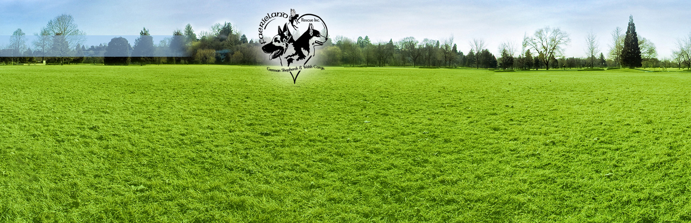
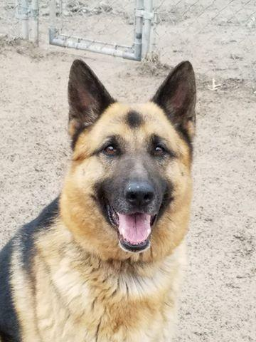

faerielandrescue.org

The Rainbow Bridge
By the edge of a woods, at the foot of a hill,
Is a lush, green meadow where time stands still.
Where the friends of man and woman do run,
When their time on earth is over and done.
For here, between this world and the next,
Is a place where each beloved creature finds rest.
On this golden land, they wait and they play,
Till the Rainbow Bridge they cross over one day.
No more do they suffer, in pain or in sadness,
For here they are whole, their lives filled with gladness.
Their limbs are restored, their health renewed,
Their bodies have healed, with strength imbued.
They romp through the grass, without even a care,
Until one day they start, and sniff at the air.
All ears prick forward, eyes dart front and back,
Then all of a sudden, one breaks from the pack.
For just at that instant, their eyes have met;
Together again, both person and pet.
So they run to each other, these friends from long past,
The time of their parting is over at last.
The sadness they felt while they were apart,
Has turned into joy once more in each heart.
They embrace with a love that will last forever,
And then, side-by-side, they cross over… together.
Faerieland Dogs that have gone to the Rainbow Bridge
